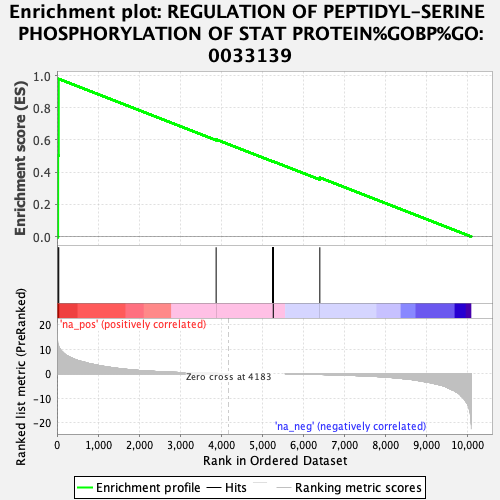
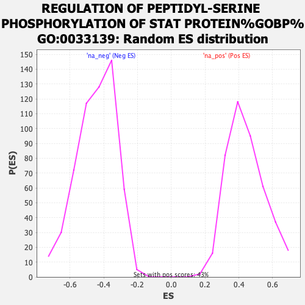

| | | Dataset | CRC_ranked_genelist.rnk |
| Phenotype | NoPhenotypeAvailable |
| Upregulated in class | na_pos |
| GeneSet | REGULATION OF PEPTIDYL-SERINE PHOSPHORYLATION OF STAT PROTEIN%GOBP%GO:0033139 |
| Enrichment Score (ES) | 0.97881645 |
| Normalized Enrichment Score (NES) | 2.2112365 |
| Nominal p-value | 0.0 |
| FDR q-value | 0.0 |
| FWER p-Value | 0.0 |
Table: GSEA Results Summary

Fig 1: Enrichment plot: REGULATION OF PEPTIDYL-SERINE PHOSPHORYLATION OF STAT PROTEIN%GOBP%GO:0033139
Profile of the Running ES Score & Positions of GeneSet Members on the Rank Ordered List

Fig 2: REGULATION OF PEPTIDYL-SERINE PHOSPHORYLATION OF STAT PROTEIN%GOBP%GO:0033139: Random ES distribution
Gene set null distribution of ES for REGULATION OF PEPTIDYL-SERINE PHOSPHORYLATION OF STAT PROTEIN%GOBP%GO:0033139